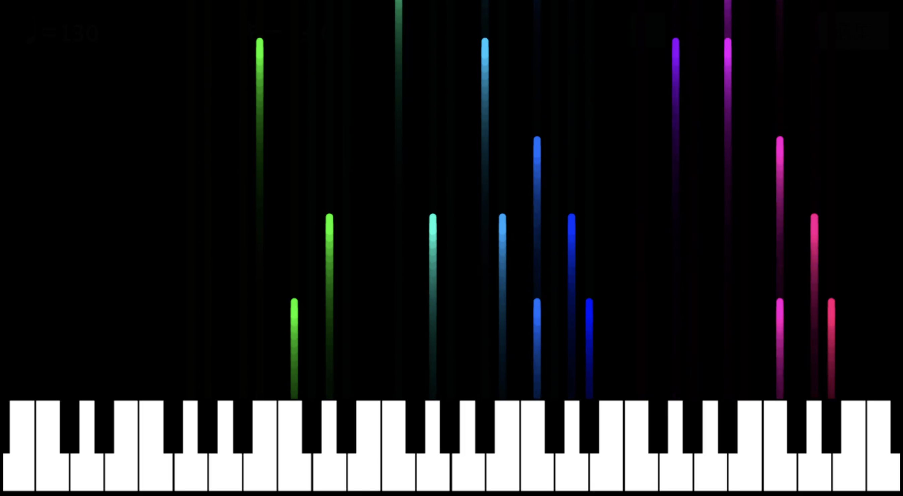
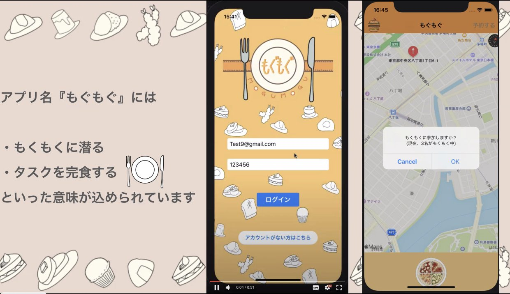
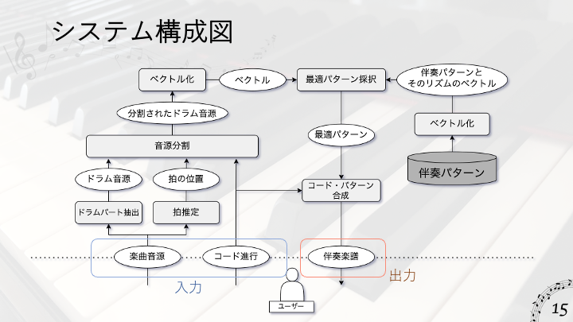
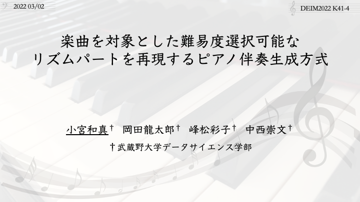
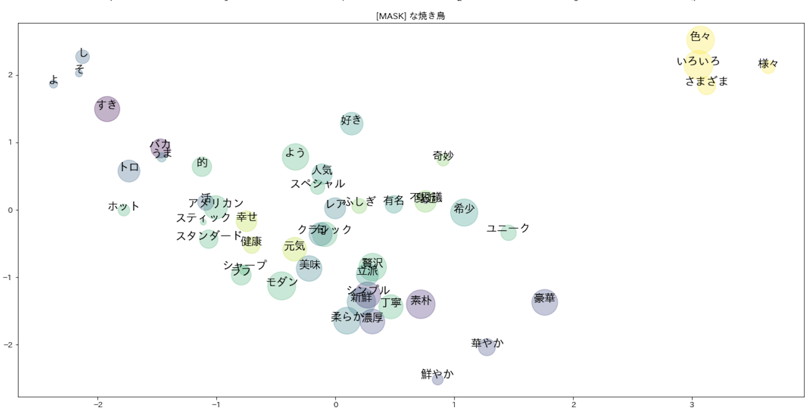
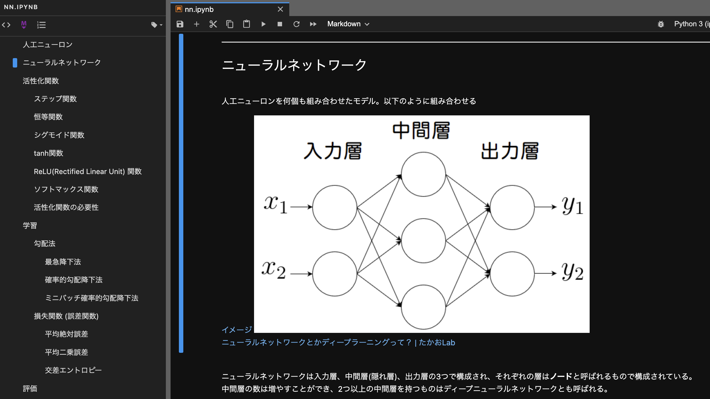
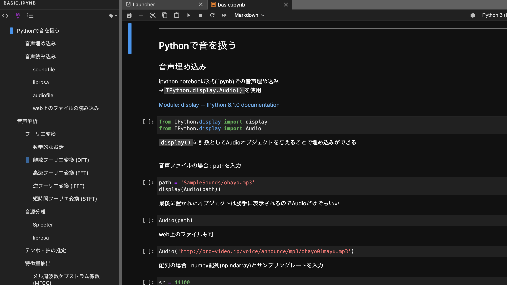
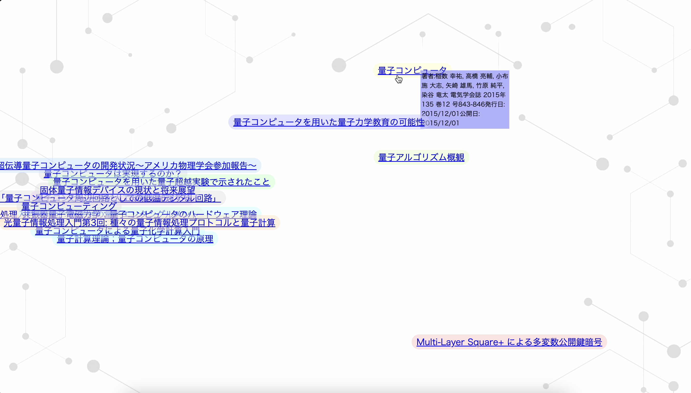
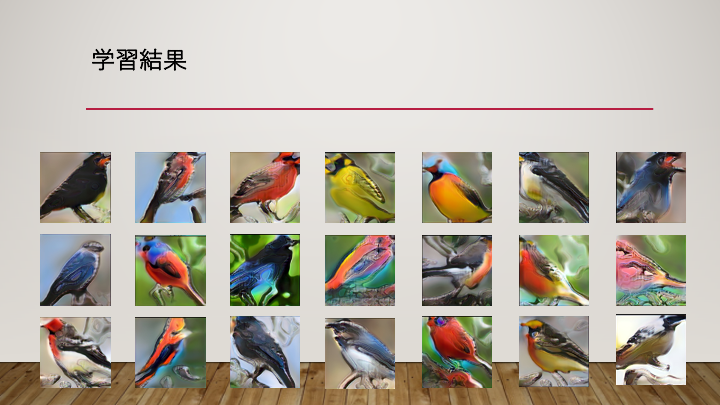

2002年7月31日に東京都清瀬市にて爆誕。
中学時代は不登校でした。そこから通信制高校を経て武蔵野大学へ入学しました。
Skill
| Python | |
| HTML・CSS | |
| JavaScript |
簡易的な音楽打ち込みアプリの作成
技育CAMP vol.9 にて努力賞を受賞
サポーターズ主催のハッカソン「技育CAMP」に先輩2人を含めた4人で参加。Swiftを使用し、オフラインでの作業を支援するiOSアプリケーション「もぐもぐ」を作成。努力賞を受賞。
学内の研究発表会にて企業賞を受賞
「楽曲を対象とした難易度選択可能なリズムパートを再現する ピアノ伴奏生成方式」というタイトルで研究を発表。「弾きたい曲はあるけど楽譜がないから弾けない」という様な状態を減らすために、楽曲を入力するとピアノ伴奏楽譜が出力されるシステムを提案。
ピアノ伴奏楽譜の自動生成システムについて論文を発表
学区内発表会と同様の「楽曲を対象とした難易度選択可能なリズムパートを再現する ピアノ伴奏生成方式」というタイトルで論文を執筆。DEIM2022にて学会発表。
飲食店におけるメニュー名提案に関する論文を発表(共著)
「事前学習モデル BERT による飲食店のメニュー名における修飾語提案」というタイトルで、情報処理学会に論文を発表。飲食店で料理のメニュー名を決定する際に適切な修飾語を付与して提案するシステムを提案。メニュー名のデータ収集や、出力結果の可視化部分などで貢献した。
学内勉強会にて「音声処理」講座の講師を務める
学内勉強会にて、「音声処理」という講座の講師を務めた。研究などで身についた、Pythonを用いて音声データを処理する知識を資料にまとめ、講座を開いた。
学内勉強会にて「ニューラルネットワーク」講座の講師を務める
学内勉強会にて、「ニューラルネットワーク」という講座の講師を務めた。個人的な好奇心からニューラルネットワークに関する勉強をし、得た知識を資料にまとめ、講座を開いた。
技育CAMP vol.4 に3人の後輩と参加
サポーターズ主催のハッカソン「技育CAMP」に、大学生になりたてほやほやの1年生3人と参加。論文を「ぱっ」と出すアプリ「ろんぱ」を作成。論文同士の内容の近さを視覚的に分かりやすくするために、機械学習を使用して、検索にヒットした論文を二次元上に可視化するwebアプリを作成。
オープンキャンパスにて架空動物画像の生成に挑戦
オープンキャンパスにて、存在しない動物の画像を生成し、参加者の高校生に発表。カラフルな鳥の画像をAIに学習させ、架空の鳥の画像を生成。生成にはGAN(敵対的生成ネットワーク)を使用。仕組みを1から学び、実装を行なった。